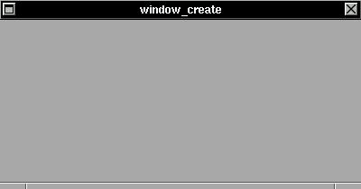

The XSTEP programming start with a window like any other window in the X Window System, but a XSTEP window is created with many useful features, like a GC and support for Window Maker's dock.SYNTAX
struct xtree *window_create(x,y,w,h,title);
void window_close(t);int x,y,w,h;
char *title;
struct xtree *t;The window_create() function create a XSTEP window in (x,y) position, (w,h) size and a title 'title' in titlebar of window. A internal structure is created and a pointer to this structure is returned. This window can be destroyed by a window_close() function.
EXAMPLE
The example available just create a XSTEP window:This application will run until window be closed.#include <xstep.h> void xmain(int n,char *p[]) { window_create(0,0,400,180,"window_create"); }